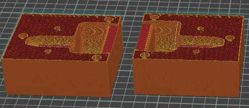
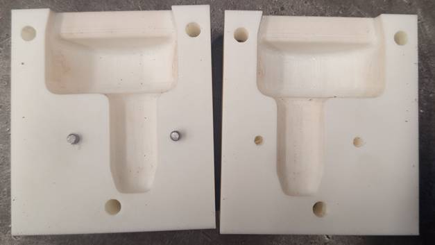
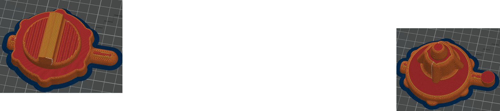
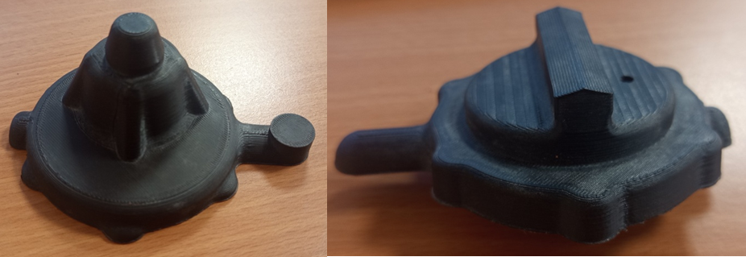

Impression 3D
CONTEXTE DE LA REALISATION
- Travail pratique réalisé en BUT 3 Génie Mécanique et Productique en industrialisation. En BUT 2 GMP pour mon projet de deuxième année mais en temps libre.
- Mise en application des connaissances liées à la préparation sur Orca Slicer et à la fabrication d'une pièce par impression 3D.
- Découverte des contraintes spécifiques à ce procédé de fabrication.
OBJECTIFS DU PROJET
- Préparer un modèle numérique en vue de sa fabrication par fonderie en sable.
- Identifier les paramètres influençant la qualité, le poids, la densité et la durée d'impression.
- Obtenir une pièce conforme à la géométrie attendue et avoir convertit en stéréolithographie le fichier .prt.
- Comprendre les avantages et les limites de la fabrication dans un contexte industriel.
CAHIER DES CHARGES
- Respecter la géométrie et les dimensions de la pièce à fabriquer.
- Choisir des paramètres d'impression adaptés à la pièce (densité, nombres de couches...).
- Tenir compte des contraintes liées à la matière et au procédé.
- Limiter les défauts et assurer une qualité satisfaisante.
- Concevoir un support adapté au rangement ET au transport du jeu.
- Prendre en compte le temps de fabrication et la consommation de matière. Imprimer avant la fin du Travail Pratique par exemple et vérifier que la bobine de PLA est suffisante pour ce que l'on souhaite imprimer
METHODES
- Méthodes utilisées :
- Préparation du modèle numérique de la pièce. Conversion du fichier .prt en fichier .stl pour pouvoir l'ouvrir sur OrcaSlicer.
- Préparation du fichier "gcode" pour l'impression en réglagant les paramètres d'impression sur Orca Slicer.
- Lancement de l'impression sur l'imprimante Creality K2 Plus et contrôle de la pièce obtenue.
- Outils et moyens :
- Modèle numérique 3D et logiciel de préparation d'impression. (Creo et Orca Slicer)
- Imprimante 3D.
- Matériau et contraintes :
- Choix du matériau : PLA.
- Influence de l'orientation, de la hauteur de couche et du remplissage sur le résultat, selon les paramètres étudiés.
- Compromis entre qualité, résistance mécanique et temps d'impression.
- Risques de défauts géométriques ou d'imprécisions dimensionnelles. Comme cela a été le cas lors de l'impression de la boite à noyau car lors de la conversion en .stl les facettes n'ont pas été mises à 0
ETAPES DE LA REALISATION
- Récupération du modèle 3D : la pièce a été créée par mes camarades.
- Préparation du fichier : importation du modèle dans Orca Slicer en ayant convertit le fichier en .STL et mis les facettes à 0.
- Paramétrage : choix des paramètres (nombre de couches, densité).
- Fabrication : lancement et suivi de l'impression 3D.
- Analyse : identification des éventuels défauts et pistes d'amélioration.
RESULTATS
- Compréhension de l'influence des paramètres d'impression sur la pièce finale.
- Identification des contraintes propres à l'impression 3D d'où l'apparence de facettes notamment.
-
Résultat de la boite à noyau


-
Résultat de la pièce


-
Résultat des quilles imprimées pour le projet BUT 2 GMP

- Industrialisation : lpréparation d'un processus de fabrication de fonderie en sable avec l'impression de pièce en 3D.
- Fabrication : compréhension du filament PLA et de ses contraintes (fragile notamment).
- Utilisation d'un logiciel métier : paramétrage et analyse dans OrcaSlicer.
- Analyse technique : prise en compte de la géométrie et des contraintes de fabrication.
- Résolution de problèmes : identification des paramètres à ajuster pour améliorer le processus.
Modules/ resssources développées :
→ Projet BUT2 GMP